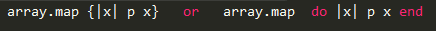
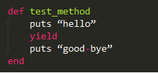
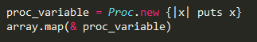
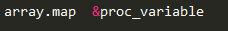
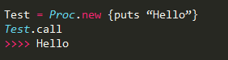
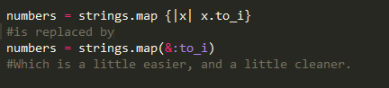
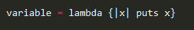
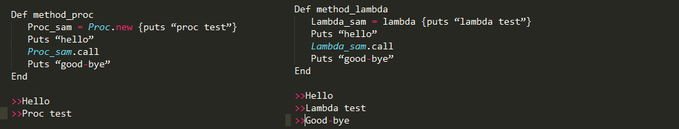

First we’ll look at blocks(code blocks) since you need to understand them to understand procs and lambdas. Blocks follow a method call either in curly braces of a ‘do/end’ enclosure.

Not all methods have access to code blocks. The method must be able to yield. This means that inside the method definition there should be a ‘yield’ keyword which causes the flow to switch to the code block. After the code block is finished it returns back to the code following the ‘yield’.

A common mistake beginners make when looking at a method call with a code block is thinking that the code block is a type of argument. This is incorrect, rather the block should be considered a method syntax instead.
Next we will look at procs. Procs provide a way to save a code block in a variable. Unlike blocks, procs are objects and thus have all the privileges of objects. Procs are called in place of blocks.

So now the code block really looks like an argument… but it’s not. A proc is just a saved code block. Another way to write it would be:

Oooh that looks nice, and now it’s more clear that blocks are not arguments. It is also possible to call procs directly using the .call method.

Procs can also be used to convert symbols to procs.

Onto lambdas, which are very similar to procs. Here is how you create one:

It is called the same way you call a proc. There are two main differences between lambdas and procs. The first difference is how they handle arguments. Lambdas with return an error if the wrong number of arguments are given. Procs will insert nil values for the missing arguments. If too many arguments are provided for a proc, it will take the first of the arguments.
The second difference is that a when a proc finishes executing it will return out of the method it was called in(remember the yield?) without continuing the rest of the method code. Lambdas do not return out of the method upon completion and allow the method to finish the rest of its code. This is an important difference to remember, depending on what methods you’re using.

RyanImmesberger@gmail.com
Twitter: @rimmesbe